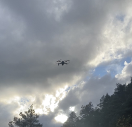

Som den første seriøs Produskjon og historiefortelling oppgave fikk hele klassen i oppgave å lage en kort og
skummel historiefortelling ved bruk av 4-6
bilder. Historien skulle presenteres på Halloween i kantinen. Vi ble gitt en måned til å planlegge,
filme og redigere bildene. Målet var at bildene sammen skulle fortelle en sammenhengende, uhyggelig
historie, der rekkefølgen på bildene ville endre stemningen og fortellingen. Jeg valgte å bruke en drone for
å ta bildene, noe som ga meg en unik rakurs på historien, og fikk en annen dynamikk enn vanlig kamera.

Planlegging
For planleggingen av prosjektet bestemte jeg meg for å bruke naturen rundt meg for å skape en uhyggelig
stemning, som skogen nærme meg. På filmdagen dro jeg sammen med faren min til en skog, hvor vi tok mer enn 40
bilder. Faren min
fungerte som operatør mens jeg kjørte rundt med motorsykkelen, og vi brukte dronen for å fange bildene fra ulike
høyder og vinkler. Jeg hadde en klar idé om hvordan bildene skulle være, og vi tok god tid på oss for å få
akkurat de
bildene som passet inn i historien. Alt ble nøye planlagt for å sørge for at bildene kunne bidra til å skape den
rette atmosfæren for Halloween.
Redigering
Redigeringen var egentlig ganske enkel, ettersom jeg bare trengte å bruke noen filtre og redusere
eksponeringen for å skape en mer stemningsfull atmosfære. I tillegg benyttet jeg generativ fyll for å gjøre
redigeringen av hodet mitt lettere.